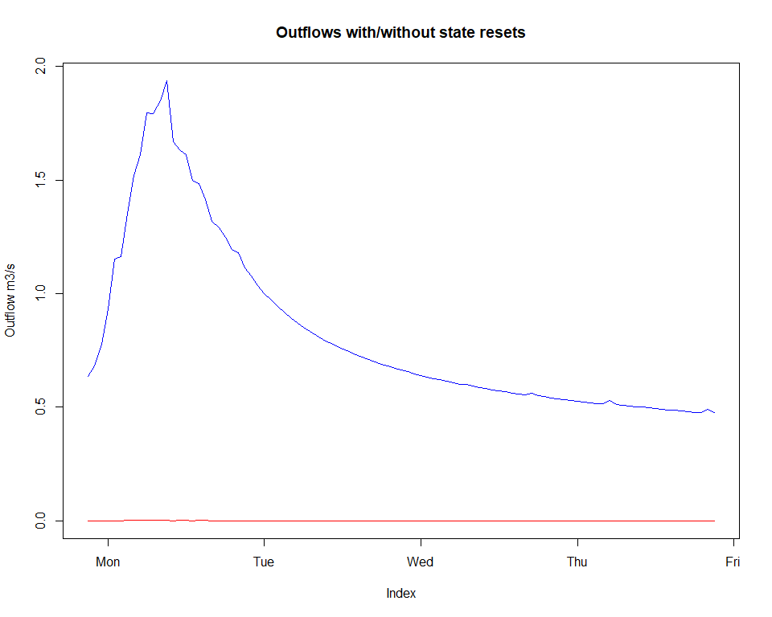
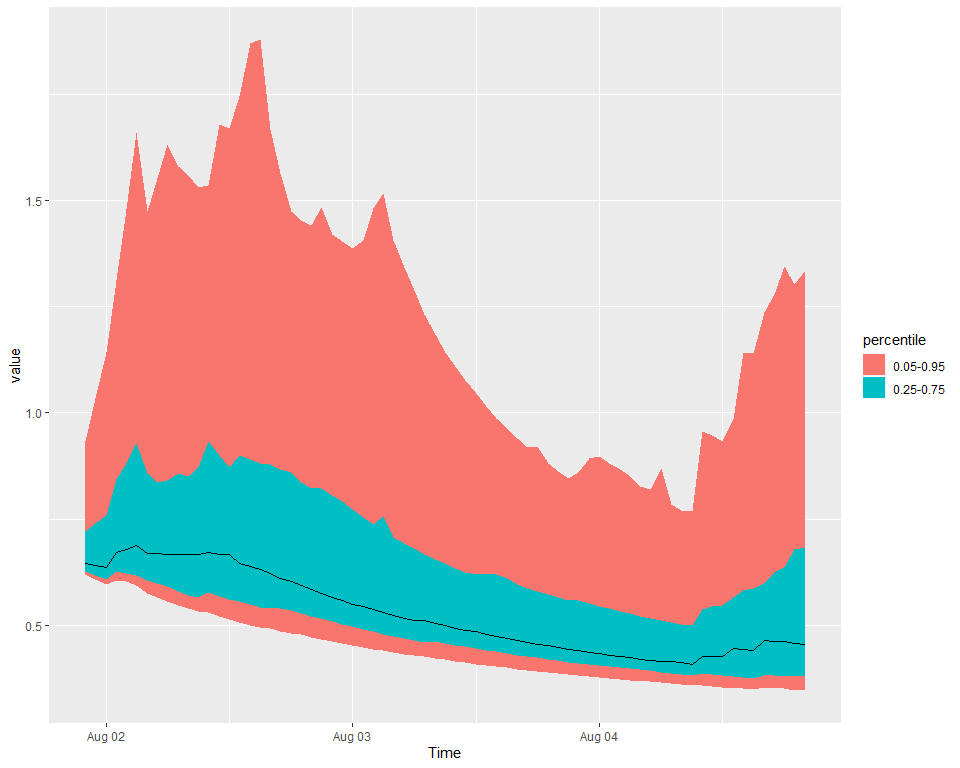

Ensemble SWIFT model runs
Jean-Michel Perraud 2020-01-28
Ensemble SWIFT model runs
About this document
This document was generated from an R markdown file on 2020-01-28 10:52:36.
Elaboration
library(swift)
has_data <- swift::hasSampleData()Let’s create a test catchment with a few subareas
runoffModel='GR4J'
nodeIds=paste0('n', 1:6)
linkIds = paste0('lnk', 1:5)
defn <- list(
nodeIds=nodeIds,
nodeNames = paste0(nodeIds, '_name'),
linkIds=linkIds,
linkNames = paste0(linkIds, '_name'),
fromNode = paste0('n', c(2,5,4,3,1)),
toNode = paste0('n', c(6,2,2,4,4)),
areasKm2 = c(1.2, 2.3, 4.4, 2.2, 1.5),
runoffModel = runoffModel
)
simulation <- createCatchment(defn$nodeIds, defn$nodeNames, defn$linkIds, defn$linkNames, defn$fromNode, defn$toNode, defn$runoffModel, defn$areasKm2)the package uchronia includes facilities to access time series from a “library”, akin to what you would do to manage books.
dataLibrary <- uchronia::sampleTimeSeriesLibrary('upper murray')
dataIds <- uchronia::GetEnsembleDatasetDataIdentifiers_R(dataLibrary)
print(uchronia::GetEnsembleDatasetDataSummaries_R(dataLibrary))## [1] "variable name: pet_der, identifier: 1, start: 1989-12-31T00:00:00, end: 2012-12-30T00:00:00, time length: 8401, time step: daily"
## [2] "variable name: pet_der, identifier: 1, start: 1988-12-31T00:00:00, end: 2012-12-30T00:00:00, time length: 8766, time step: daily"
## [3] "variable name: rain_der, identifier: 1, start: 1989-12-31T13:00:00, end: 2012-10-31T12:00:00, time length: 200160, time step: hourly"
## [4] "variable name: rain_fcast_ens, identifier: 1, index: 0, start: 2010-08-01T21:00:00, end: 2010-08-06T21:00:00, time length: 5, time step: <not yet supported>"The sample catchment structure is obviously not the real “Upper Murray”. For the sake of a didactic example, let’s set the same inputs across all the subareas.
precipIds <- paste( 'subarea', getSubareaIds(simulation), 'P', sep='.')
evapIds <- paste( 'subarea', getSubareaIds(simulation), 'E', sep='.')
playInputs(simulation, dataLibrary, precipIds, rep('rain_obs', length(precipIds)))
playInputs(simulation, dataLibrary, evapIds, rep('pet_obs', length(evapIds)), 'daily_to_hourly')## Warning in playInputs(simulation, dataLibrary, evapIds, rep("pet_obs",
## length(evapIds)), : Reusing argument `resample` to match the length of
## `modelVarId`# And the flow rate we will record
outflowId <- 'Catchment.StreamflowRate'Given the information from the input data, let’s define a suitable simulation time span. NOTE and TODO: hourly information may not have been shown above yet.
s <- joki::asPOSIXct('2007-01-01')
e <- joki::asPOSIXct('2010-08-01 20')
sHot <- joki::asPOSIXct('2010-08-01 21')
eHot <- joki::asPOSIXct('2010-08-05 21')First, before demonstrating ensemble forecasting simulations, let’s demonstrate how we can get a snapshot of the model states at a point in time and restore it later on, hot-starting further simulation.
setSimulationSpan(simulation, start=s, end=eHot)
recordState(simulation, outflowId)
execSimulation(simulation)
baseline <- getRecorded(simulation, outflowId)
intv <- joki::makeTextTimeInterval(sHot,eHot)
baseline <- baseline[intv]
setSimulationSpan(simulation, start=s, end=e)
execSimulation(simulation)
snapshot <- snapshotState(simulation)We can execute a simulation over the new time span, but requesting model states to NOT be reset. If we compare with a simulation where, as per default, the states are reset before the first time step, we notice a difference:
setSimulationSpan(simulation, start=sHot, end=eHot)
execSimulation(simulation, resetInitialStates = FALSE)
noReset <- getRecorded(simulation, outflowId)
execSimulation(simulation, resetInitialStates = TRUE)
withReset <- getRecorded(simulation, outflowId)
x <- merge(noReset,withReset)
zoo::plot.zoo(x, plot.type='single', col=c('blue','red'), ylab="Outflow m3/s", main="Outflows with/without state resets")
Now let’d ready the simulation to do ensemble forecasts. We define a list inputMap such that keys are the names of ensemble forecast time series found in dataLibrary and the values is one or more of the model properties found in the simulation. In this instance we use the same series for all model precipitation inputs in precipIds
inputMap <- list(rain_fcast_ens=precipIds)
resetModelStates(simulation)
setStates(simulation, snapshot)ems <- createEnsembleForecastSimulation(simulation, dataLibrary, start=sHot, end=eHot, inputMap=inputMap, leadTime=as.integer(24*2 + 23), ensembleSize=100, nTimeStepsBetweenForecasts=24)
GetSimulationSpan_Pkg_R(ems)## $Start
## [1] "2010-08-01 21:00:00 UTC"
##
## $End
## [1] "2010-08-04 21:00:00 UTC"
##
## $TimeStep
## [1] "hourly"recordState(ems, outflowId)
execSimulation(ems)
forecasts <- getRecordedEnsembleForecast(ems, outflowId)
strSwiftRef(forecasts)## ensemble forecast time series:
## 2010-08-01 21:00:00 UTC
## time step 86400S
## size 4flowFc <- uchronia::getItem(forecasts, 1)
uchronia::plotXtsQuantiles(flowFc)